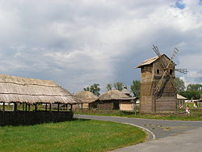
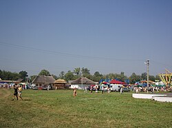

Вітаю вас! Мене звати Іван, я молодий підприємець, шанувальник української культури, засновник Харківського ярмарку.
На нашому ярмарку зібрані найкращі майстри Харківщини. Кожен з них працює за своїм напрямом: гончарство, бісероплетіння, вишивка, миловаріння, ткацтво, розпис, різьблення, ковальство, писанкарство, лозоплетіння, виготовлення музичних інструментів і т.д.
Також на ярмарку присутні місця, де готують традиційні українські та харківські смаколики: пиріжки, перепічки, деруни, селянку, голубці, млинці та ін.
Якщо ви любите Україну, її культуру, хочете підтримати наших майстрів та й просто кудись піти на вихідні, ласкаво просимо на наш ярмарок!
Графік роботи: квіт.–жовт., щосуботи (окрім свят) з 10:00 до 20:00.
Україна, м. Харків, Рибний майдан.

